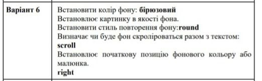

Блок контент id="content"
ВІД ЗИМИ І ДО ЗИМИ
Січень січе, Лютий лютує, Березень плаче,
Квітень квітує. Травень під ноги Стелить
травицю. Червень складає Сіно в копиці. Липень
медовий Бджілок чарує. Серпень чудовий Булки
дарує. Вересень трусить Груші в садочку.
Жовтень гаптує Клену сорочку. Йде листопад,
Застеля килими. Грудень надходить — Початок
зими. Ф. Петров

График функции — множество точек, у которых абcциссы являются допустимыми значениями аргумента x, а ординаты — соответствующими значениями функции y.
Обычно график рассматривается для вещественных функций f:R->R и является подмножеством плоскости R*R. В общем случае, график функции f:X-> Y, есть подмножество
F({(x,f(x)є X * Y|x є X}